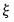
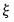
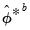
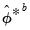

Without loss of generality (i.e., remaining agnostic about the method of estimation and structural identification), consider an arbitrary full impulse response path matrix:
where we replace the estimated in Equation (46.26) with , and is a transformation matrix that depends on the lag coefficients of the LP (Jordà 2009, p. 642).
Recall that the sequential confidence intervals in Equation (46.24) and
Equation (46.27) ignore collinearity among impulse response coefficients, and the temporal ordering of the impulse response path. To address these issues, Jordà (2009) proposes two simultaneous confidence band computations, the Scheffé band and the conditional error band.
An alternative method of computing impulse response confidence intervals is provided by Sims and Zha (1999). This Bayesian approach simulates the posterior distribution of the impulse response conditional on the p pre-sample observations. Assuming Gaussian innovations, the distribution of interest is normal-inverse Wishart. As the theory has only been developed given traditional VAR estimation, we only employ this method in that context.
From “Impulse Response Confidence Intervals” we see that the impulse response path is a nonlinear function of the vectorized VAR coefficients , and the vectorized residual covariance matrix

, which we may denote as
In traditional regression settings, the bootstrap procedure often used to obtain  is the residual based bootstrap
is the residual based bootstrap. Assuming a simple autoregressive DGP of the form above, the algorithm is summarized below:
The block of blocks bootstrap is a non-parametric method designed to accommodate weakly dependent stationary observations. While there are several implementations of this methodology, each addressing important practical aspects, here we only outline the basic idea. In particular, data is bootstrapped by selecting blocks of length

randomly with replacement from

. Again, assuming a simple autoregressive DGP shown earlier, the algorithm is described below:
Several attempts have been proposed to reduce this computational burden, among the most popular of which is the fast double bootstrap (FDB) algorithm of Davidson and MacKinnon (2002) and general iterated variants proposed in Davidson and Trokic (2020). The principle governing the success of these algorithms relies on setting . For instance, the FDB has proved particularly useful in approximating full double bootstrap algorithms with roughly less than the twice the computational burden of the traditional bootstrap:

to be precise.
An alternative to the standard percentile CI is the Hall (1992) confidence interval. The idea behind this contribution is that the distribution of is asymptotically approximated by the distribution of . Accordingly, the bootstrap CI is derived as:
In additional to the confidence interval methods describe above in “Confidence Interval Methods”, we may employ two additional methods specifically designed for use in local projection settings.


,
,
denote, respectively, some general impulse response coefficient, estimated using the original data
and the DGP in Equation (46.1), and the associated bootstrap estimator so that .
The choice of bootstrap algorithm to derive is not particularly important. Traditionally, a procedure like the residual bootstrap is widely used for traditional VAR impulse response analysis. While modern approaches do suggest the viability of the block of blocks bootstraping, To follow the original literature, however, EViews offers only the residual bootstrap methods described above (“Residual Based Bootstrap”) for the case of impulse responses derived via traditional VARs., for . Once generated, we can apply local projection methods outlined in “Local Projection” in order to estimate accordingly.
In additional to the confidence interval methods describe above in “Confidence Interval Methods”, we may employ two additional methods specifically designed for use in local projection settings. , and denotes the
, and denotes the  -quantile of the standard Gaussian distribution.
-quantile of the standard Gaussian distribution.  . While these results are both useful and valid, this approach to confidence interval computation ignores the collinearity among impulse response coefficients, and ignores the temporal ordering of the impulse response path. The latter is a particularly important omission as a given value of the impulse response path affects the future trajectory of the path, but not conversely.
. While these results are both useful and valid, this approach to confidence interval computation ignores the collinearity among impulse response coefficients, and ignores the temporal ordering of the impulse response path. The latter is a particularly important omission as a given value of the impulse response path affects the future trajectory of the path, but not conversely.
 satisfies:
satisfies: is the -th element of .
is the -th element of . .
. -th element of
-th element of  .
. . Although the presence of the moving average doesn’t affect estimator consistency, Jordà (2005) recommends the use of a Newey-West estimator for
. Although the presence of the moving average doesn’t affect estimator consistency, Jordà (2005) recommends the use of a Newey-West estimator for  at each horizon step
at each horizon step  to improve the accuracy of the confidence interval estimate.
to improve the accuracy of the confidence interval estimate. , for sequential estimation, Jordà (2005) recommends use of a Newey-West estimator of the residual covariance matrix at each horizon step
, for sequential estimation, Jordà (2005) recommends use of a Newey-West estimator of the residual covariance matrix at each horizon step  .
. is the
is the  critical value of .
critical value of . , where:
, where: and
and  percentiles of the simulated posterior distribution of the impulse response coefficients. Extending the result to structural shocks is straightforward and only requires scaling by an appropriate .
percentiles of the simulated posterior distribution of the impulse response coefficients. Extending the result to structural shocks is straightforward and only requires scaling by an appropriate . , an associated core dataset
, an associated core dataset  , some parameter space , and an auxiliary data/parameter space  to complete the specification. We can succinctly describe such a DGP as a tuple
, some parameter space , and an auxiliary data/parameter space  to complete the specification. We can succinctly describe such a DGP as a tuple of
of  can be approximated by generating a large number, say
can be approximated by generating a large number, say  , of different outcome paths (
, of different outcome paths ( with
with  ) for
) for  , where the superscript indicates that the object is derived from simulation. In particular, the
, where the superscript indicates that the object is derived from simulation. In particular, the  outcomes
outcomes  are obtained by simulating from
are obtained by simulating from  (via repeated applications of
(via repeated applications of  ) to generate
) to generate  independent outcomes of
independent outcomes of  , and for each such draw, estimate
, and for each such draw, estimate  and compute the corresponding
and compute the corresponding  in the same way
in the same way  was derived from the original data.
was derived from the original data.  is then estimated as the empirical distribution of .
is then estimated as the empirical distribution of . to derive estimates
to derive estimates  and the residual process
and the residual process  .
. :
:  to obtain bootstrap innovations .
to obtain bootstrap innovations . to derive estimates and
to derive estimates and  .
. . In other words, form a matrix .
. In other words, form a matrix . :
: 
 to derive estimates
to derive estimates  and
and  .
.
 of
of  . This is typically needed in deriving the variance of a bootstrap statistic. In this case, for each , the distribution is approximated by generating a large number, say
. This is typically needed in deriving the variance of a bootstrap statistic. In this case, for each , the distribution is approximated by generating a large number, say  , of different outcome paths (
, of different outcome paths ( with ) for
with ) for  , where the superscript indicates that the object is derived from a second stage bootstrap simulation. In particular, the outcomes are obtained by simulating from each first stage bootstrap DGP in exactly the same way that was simulated from the original DGP.
, where the superscript indicates that the object is derived from a second stage bootstrap simulation. In particular, the outcomes are obtained by simulating from each first stage bootstrap DGP in exactly the same way that was simulated from the original DGP.  is estimated as the empirical distribution of
is estimated as the empirical distribution of denote a given significance level so that the confidence interval of interest has coverage
denote a given significance level so that the confidence interval of interest has coverage  . Then, the following bootstrap confidence intervals have been considered in the impulse response literature. See Lütkepohl (2005) for further details.
. Then, the following bootstrap confidence intervals have been considered in the impulse response literature. See Lütkepohl (2005) for further details. and are respectively the
and are respectively the  and
and  quantiles of the empirical distribution of
quantiles of the empirical distribution of  .
. and are respectively the
and are respectively the  and
and  quantiles of the empirical distribution of . See Hall (1986) for details.
quantiles of the empirical distribution of . See Hall (1986) for details. , formalized as:
, formalized as: quantiles of the empirical distribution of
quantiles of the empirical distribution of  where:
where:  individual bootstrap estimates . In particular:
individual bootstrap estimates . In particular: -values and confidence intervals. In particular, any
-values and confidence intervals. In particular, any  -value can be converted into a confidence bound through inversion. Thus, the FDB CI algorithm first derives the FDB
-value can be converted into a confidence bound through inversion. Thus, the FDB CI algorithm first derives the FDB  -values for a studentized test statistic that rejects in the lower and upper tails as follows:
-values for a studentized test statistic that rejects in the lower and upper tails as follows: is the usual indicator function and is the bootstrap
is the usual indicator function and is the bootstrap  -value derived as follows:
-value derived as follows: -quantile of the second stage bootstrap statistics . Note here that the latter are obtained by setting
-quantile of the second stage bootstrap statistics . Note here that the latter are obtained by setting  , thereby achieving a significant computational speedup.
, thereby achieving a significant computational speedup. -quantile of the first stage bootstrap statistics .
-quantile of the first stage bootstrap statistics . and
and  empirical quantiles of the bias corrected bootstrap impulse responses.
empirical quantiles of the bias corrected bootstrap impulse responses. .
. is the variance (covariance) of the impulse response coefficient (path):
is the variance (covariance) of the impulse response coefficient (path): and
and  empirical quantiles of . Let and respectively denote the indices associated with these two quantiles.
empirical quantiles of . Let and respectively denote the indices associated with these two quantiles. ) has an equivalent representation as a VEC() process, one can simply convert bootstrap VAR estimates into their VEC equivalents, and proceed to derive the VEC impulse responses using the latter coefficients. Alternatively, one can start from a VEC representation, obtain bootstrap coefficient estimates, and then integrate the VEC model to its VAR equivalent. The converted bootstrap coefficient estimates can then be used to derive bootstrap CIs for the corresponding VAR.
) has an equivalent representation as a VEC() process, one can simply convert bootstrap VAR estimates into their VEC equivalents, and proceed to derive the VEC impulse responses using the latter coefficients. Alternatively, one can start from a VEC representation, obtain bootstrap coefficient estimates, and then integrate the VEC model to its VAR equivalent. The converted bootstrap coefficient estimates can then be used to derive bootstrap CIs for the corresponding VAR.